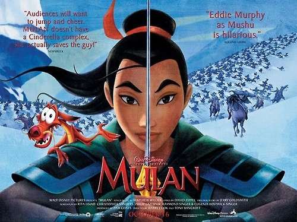

여성영웅소설로서의 <뮬란> 분석

디즈니 애니메이션 <뮬란> 포스터
여성영웅소설 서사 구조
영웅의 탄생
여성으로서의 한계 경험과 조력자 등장
허물을 벗어 절세가인이 되거나 남장을 통해 남성성 획득
뛰어난 솜씨로 주변 사람들에게 인정받음
적대자의 등장으로 곤란한 처지에 놓임
적대자를 물리치고 문제를 해결함
더 강한 적대자의 습격을 막아내고 격퇴함
공로를 인정받아 보상을 얻고 조력자 남성과의 혼인 혹은 영웅으로서의 삶을 영위함